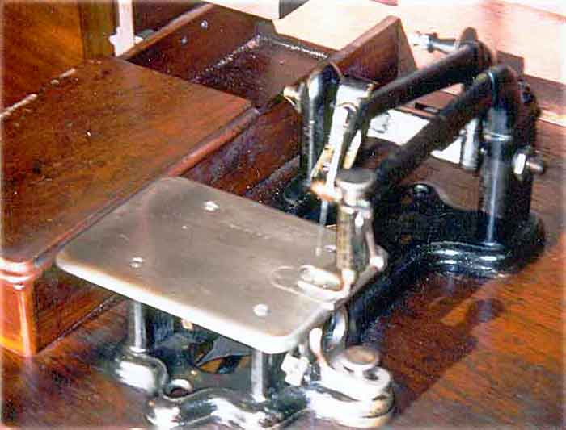
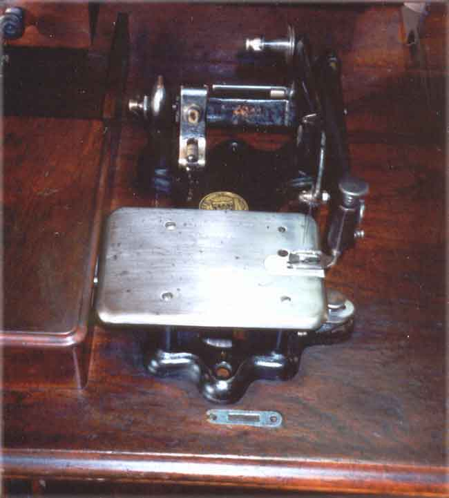
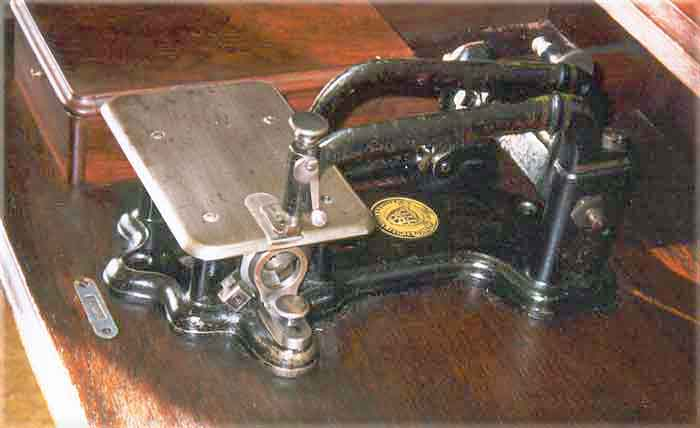
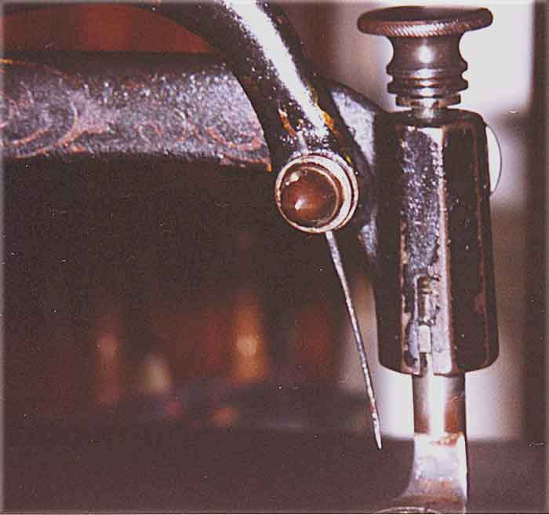

THE NEEDLEBAR
Wheeler & Wilson Sewing Machine Company
Bridgeport, Connecticut
Wheeler & Wilson #3
Serial #847975 (1876)
Pictures courtesy of Annie Rixe
Quarter View

Front View

Right View

Needle Detail

Pictures posted on this
page may not be reproduced or distributed in part or in whole without the
prior written permission of the relevant copyright owner